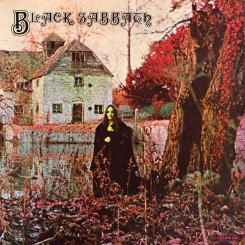
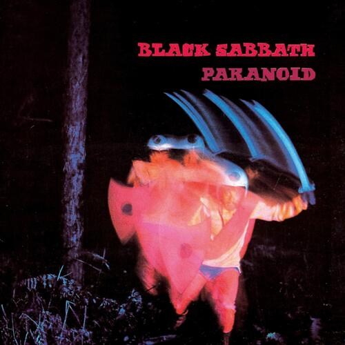
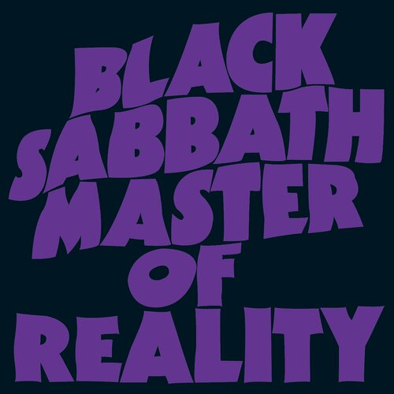
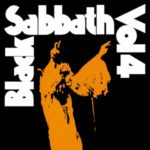
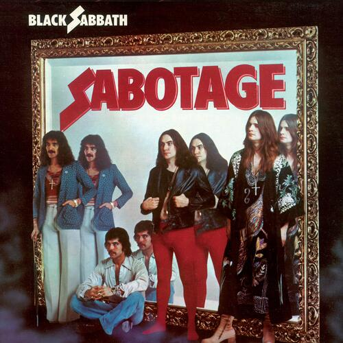
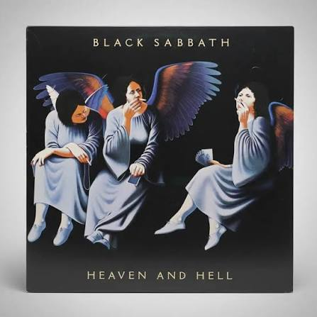
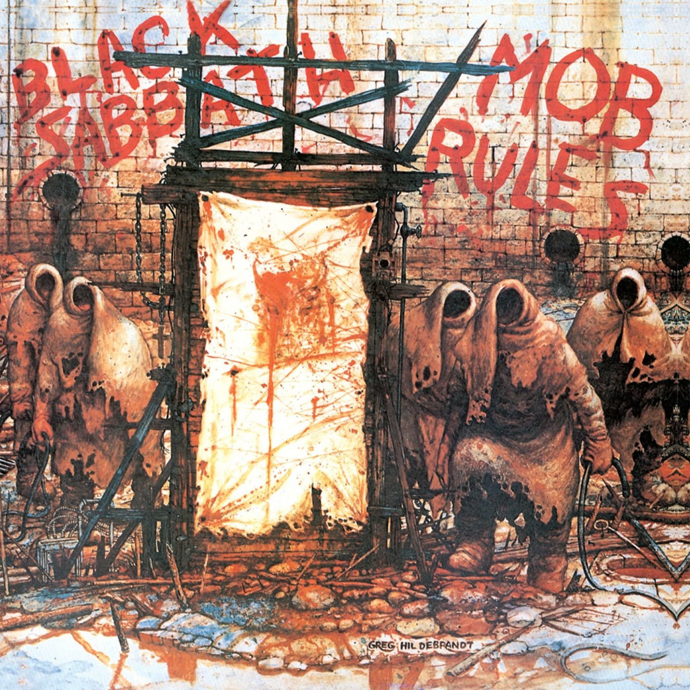
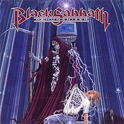

Black Sabbath (1970)
A estreia fundamental do gênero.
A obra musical de Ozzy Osbourne é um dos pilares mais massivos da história do Rock. Esta página reúne os lançamentos de estúdio divididos entre os clássicos imortais que definiram o Heavy Metal e os registros modernos que consagraram o Madman.

A estreia fundamental do gênero.

O livro mais vendido (aproximadamente 12 milhões de cópias), juntamente com "Homem de Ferro" e "Paranoid".

Ultra-graves e som pesado.

Experimentação e excessos no estudo.

Complexo e progressivo.
Os registros históricos que marcaram a entrada do lendário vocalista Ronnie James Dio, trazendo uma nova energia épica, mística e riffs colossais para a discografia da banda.

Renascimento Clássico com Dio.

Poder Direto.

Breve retorno da formação com Dio.